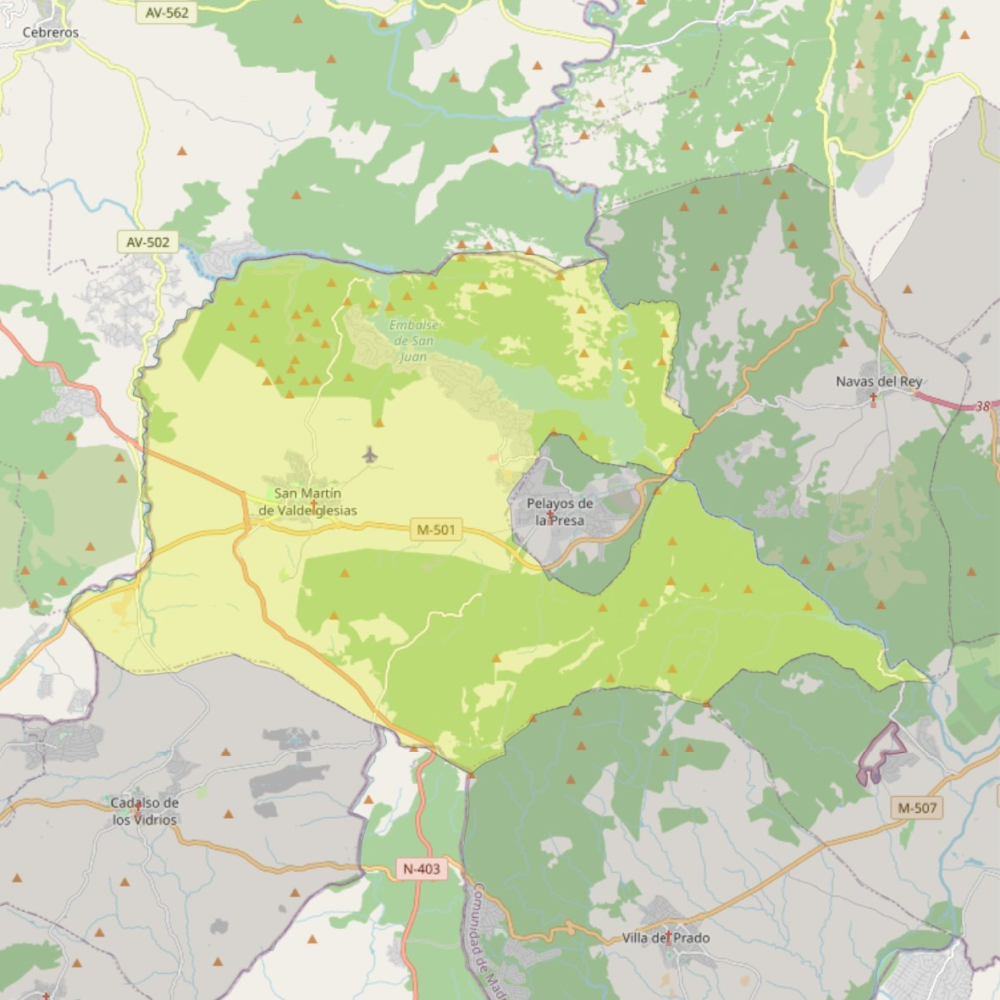

San Martín Obispo

- Arciprestazgo
- San Martín de Valdeiglesias
- Población
- San Martín de Valdeiglesias
- Dirección postal
- Pza. Real, s/n
- Código postal
- 28680
- Extensión
- 116,49 km² (11.649 ha)
- Teléfono
- 918 610 014
- Correo electrónico
- smvparroquia@gmail.com